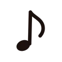
Aulas – Teoria, Teclado e ViolãoAprenda música com histórias que você nunca mais esquece.
Aulas de Teoria Musical, Teclado e Violão comigo, o Felipe, e com a turma das Fábulas Musicais. Um método completo, do primeiro acorde à composição, contado como uma fábula.
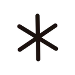
Cotação sem compromisso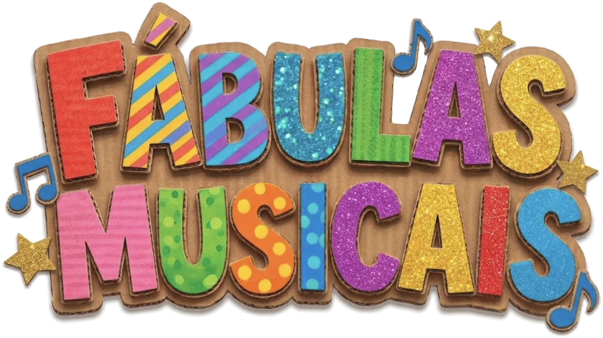
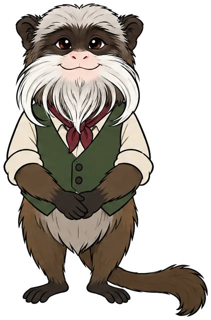
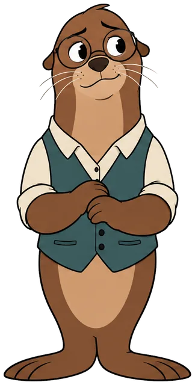
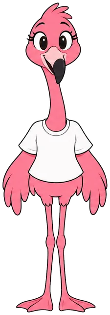
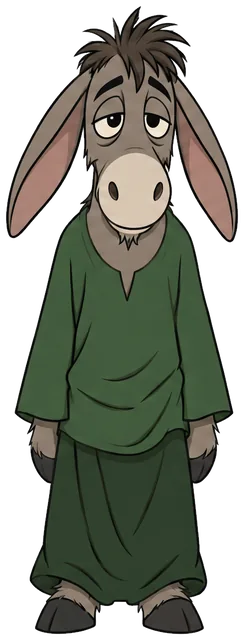
A turma tem um recado pra você
Eu e os personagens explicamos, numa conversa, como funcionam as aulas e o que você vai tocar já nas primeiras semanas.
"Errou? O Délio também. Vamos de novo." Aqui o erro faz parte da história.
Quero conversar com o FelipeVocê já começou a estudar música e parou no meio?
Quase sempre o problema não é falta de talento. É o jeito como a música chega até você.
Nas Fábulas Musicais é diferente
- Cada conteúdo vira uma cena.O Snob explica a regra, o Délio erra junto com você, o Túlio segura o tempo. A regra vira lembrança.
- Um caminho completo, aula por aula.Você sempre sabe onde está e qual é o próximo passo, do nível 1 ao 3.
- Tarefa, plano de estudo e correção.Toda aula termina com o que praticar. No instrumento, você me manda um vídeo curto e eu corrijo.
- Recitais e selos de conquista.Recital interno a cada etapa e um selo por aula: o progresso fica visível para o aluno e para a família.
É para você se…
Cinco amigos para estudar com você
Cada um tem um instrumento, um jeito de falar e um papel na história. Você vai rir com eles, errar com eles e aprender com eles.
Arraste para o lado para conhecer todos.
Escolha por onde começar
Três cursos, cada um em três níveis. Veja exatamente o que você vai aprender em cada etapa.
Do ateliê às estrelas, uma nota de cada vez
Cada nível tem seu cenário e seu material ilustrado com a turma. O aluno sabe onde está e enxerga aonde vai chegar.
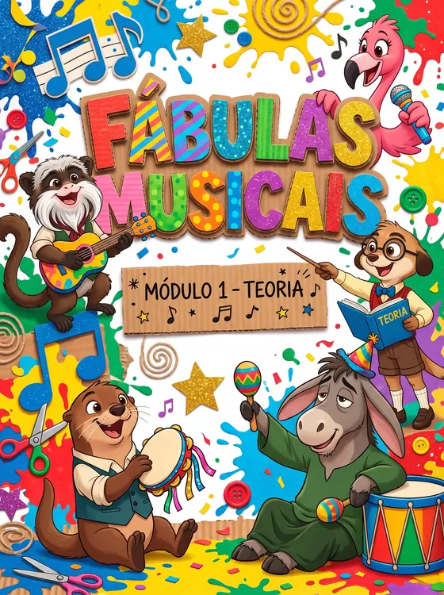
Nível 1 · BásicoO Ateliê
Tudo começa na mesa: pegar o material e montar as primeiras peças. Leitura, ritmo e os primeiros acordes.
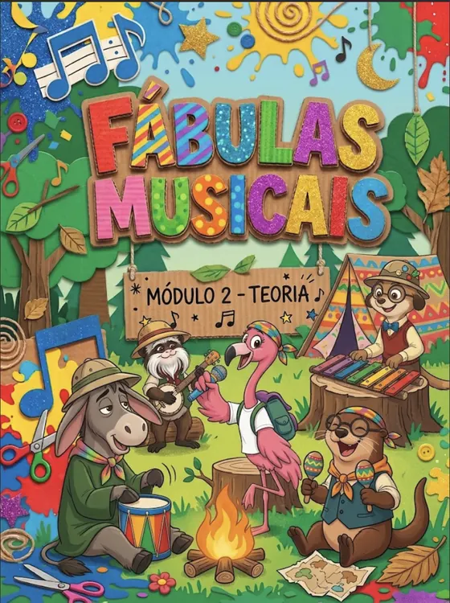
Nível 2 · IntermediárioA Floresta
Hora de sair e explorar: harmonia, levadas, improviso e tocar em banda.
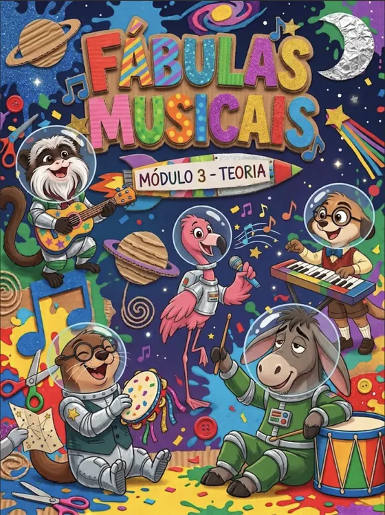
Nível 3 · AvançadoO Espaço
Chegar às estrelas: arranjo, composição, solo e direção musical.
Um livro que conta uma história e uma plataforma só sua
Nada de apostila xerocada. O aluno estuda com material próprio das Fábulas Musicais e continua a aula em casa, na plataforma.
Livro 1 · A Canção do Ateliê
No livro de Teoria 1, o Sr. Barbatus é o professor da turma e tem um mistério antigo: uma canção que ele começou há muitos anos e nunca terminou. Aula após aula, o aluno aprende o que falta para ajudar a turma a terminá-la.
"Não tenha pressa. Errou? O Délio também. Vamos de novo. Devagar a gente aprende para sempre." Sr. Barbatus
Toda aula do livro tem as mesmas partes, então o aluno sempre sabe onde encontrar cada coisa:
- Nesta aula você vai os objetivos, para saber aonde vamos chegar
- A história o capítulo da aventura, com o conteúdo acontecendo na prática
- Entendendo de verdade a explicação com figuras, tabelas e partituras
- Mãos à obra exercícios para a sala e para casa
- Ouvido atento percepção, solfejo e movimento
- Para casa a tarefa da semana
- Selo conquistado o selo da aula e o que você já consegue fazer
O som vem antes do símbolo:
O aluno primeiro ouve, canta e sente; depois dá nome e só então lê e escreve. É o caminho de métodos consagrados da educação musical, como os de Kodály e Edwin Gordon.
A aula continua em casa
Aula 8 · Escala maior
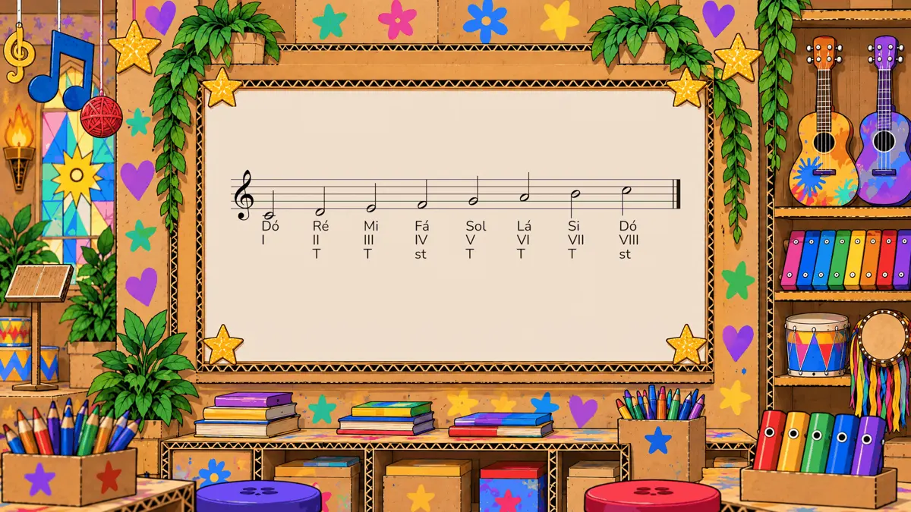
A plataforma é fechada: só alunos entram. Episódios animados da turma estão em produção.
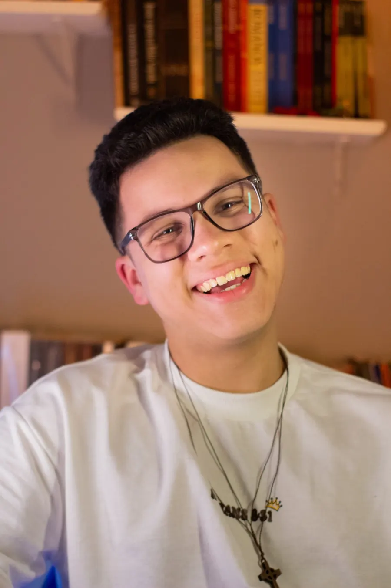
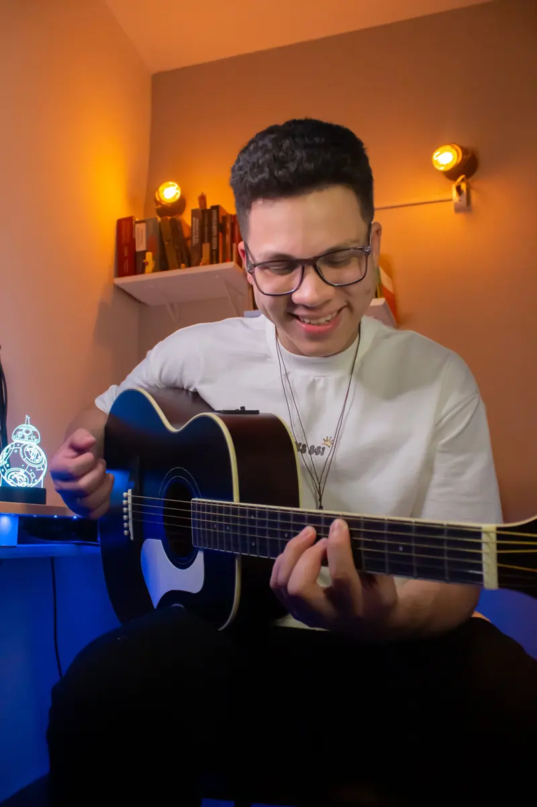
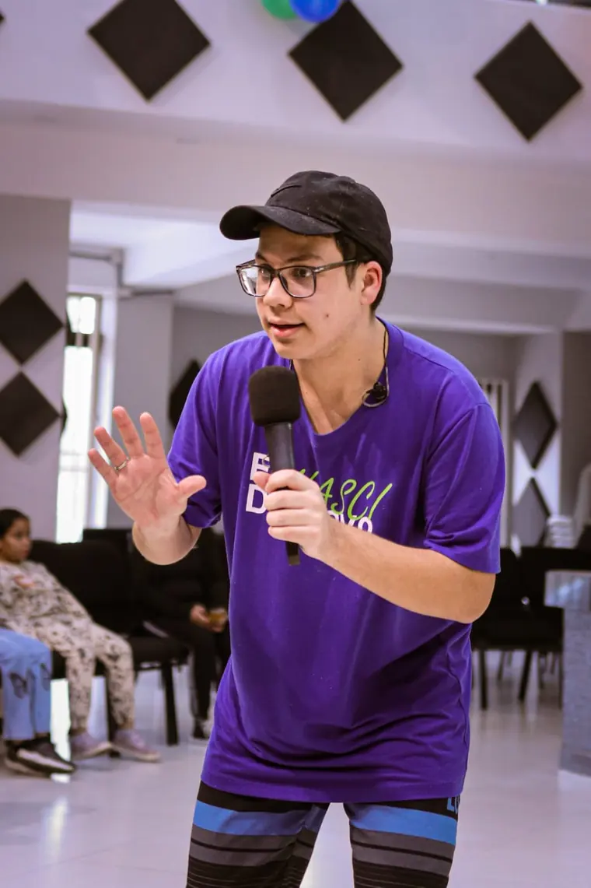
Prazer, eu sou o Felipe
Sou formado pela EMESP Tom Jobim, produtor musical e um leitor apaixonado. Passo a semana entre estúdio, partituras e livros, e foi juntando essas três coisas que nasceram as Fábulas Musicais.
Eu acredito que histórias são a melhor forma de aprender qualquer coisa. A gente esquece uma regra decorada, mas não esquece o dia em que o Délio errou o Sol e tentou de novo. Por isso cada conteúdo chega por um personagem e uma situação, com um método sério por trás.
"Histórias são a melhor forma de aprender qualquer coisa. Música não é exceção."
Felipe Santos
Três passos até a sua primeira aula
Me chama no WhatsApp
Monte a mensagem aqui na página em 20 segundos ou só mande um "oi".
A gente conversa
Seu objetivo, seu nível, a idade do aluno e o melhor horário. Eu indico o curso certo.
Você recebe a cotação
Com o valor e os horários disponíveis. Gostou, é só escolher o dia da primeira aula.
Eu acompanho cada aluno de perto, então os horários são poucos. Quem chama primeiro escolhe primeiro.
Perguntas que todo mundo faz
Não achou a sua? Pergunta direto no WhatsApp, eu respondo.
Preciso saber alguma coisa de música?
As aulas são para crianças ou para adultos?
Preciso ter o instrumento em casa?
Posso fazer Teoria junto com o instrumento?
Quanto tempo dura cada curso?
Como acompanho o progresso?
Quanto custa?
Toda nota tem uma história. A sua começa com um "oi".
Me manda uma mensagem e conta o que você quer tocar. Eu respondo pessoalmente com a cotação e os horários livres.